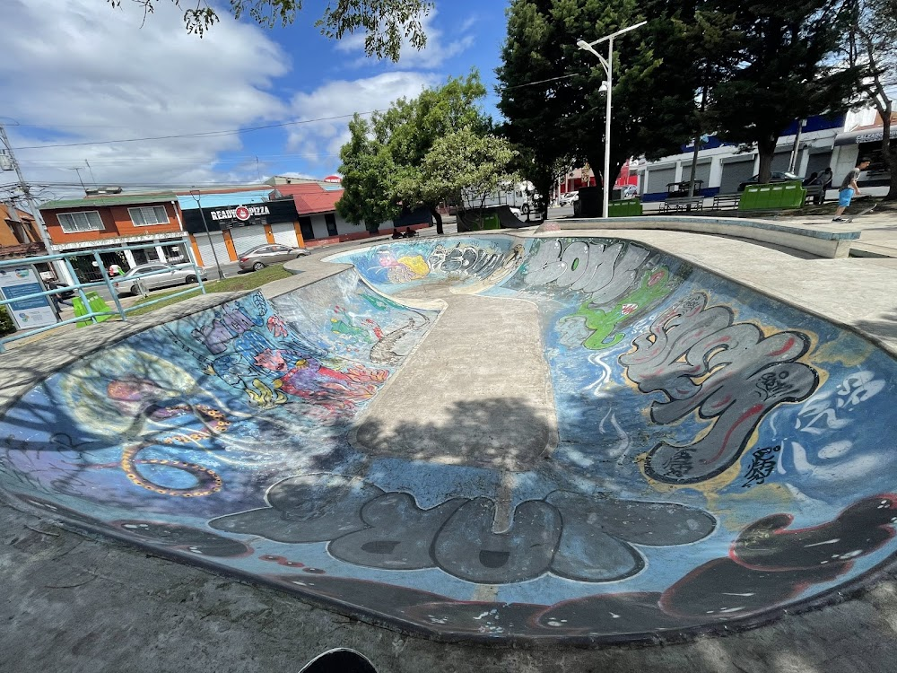

Here we bring to you the easy way to explore more about your next day ride.
Did it happen to you when you are making plans for the ride to some skatepark
and you do not know where to go or even how to get there...?
this aplication were made exactly to giving just the nesesary
for getting there and make sure your day ride,
lets take a look down below!.

Moravia Skatepark
The Moravia Skatepark is a free, public park located in the Central Park of San Vicente,
Moravia, San José, Costa Rica.
It is open 24 hours a day and features both a bowl and street elements.
The park is a concrete park featuring a bowl and various street-style elements like speed bumps.
It was designed as a space for both skateboarding and BMX. The surrounding park area offers green spaces,
walking trails, and playgrounds, making it a family-friendly destination.

Jose Maria.z Skatepark
The Skate Park José María Zeledón is a skatepark in Curridabat, San José, Costa Rica,
open daily from 8:00 AM to 8:00 PM. It features various ramps and rails suitable for different skill levels,
and it is a free and popular destination for skaters and BMX riders. The park is part of the larger José María Zeledón Municipal Park,
which offers other amenities, and it has received positive reviews for its lively community atmosphere and facilities.

Salvador Skatepark
It is a place well known by the nearest inhabitants as a secure place to skate and
equipped with the basic tools for beginners as well. Located
at Mantica, Provincia de San José, Costa Rica, from Sabana's park 500mts to the north.
General Information
Skatepark Name
El Salvador Skatepark
Location
Address
Mantica, San José Province, San José, Costa Rica
Country:
Costa Rica
Latitude
9.94
Longitude
-84.1

Alajuelita Skatepark
The Alajuelita skatepark is a three-level, high-quality facility located within the Human Development Park in Alajuelita,
Costa Rica. It features distinct areas for street, bowl, and BMX, and is considered one of the best in the country.
The park opened in July 2023 and is managed by the Municipality of Alajuelita.

Luzo Skatepark Heredia
Luzo Skatepark is a community-built skatepark located in San Rafael, Heredia, Costa Rica, named in memory of a local youth advocate.
It features a variety of ramps for different skill levels, a covered area, and is open from 7 a.m. to 9 p.m. daily.
While the park provides a positive space for many, user reviews have raised concerns about safety issues related to drug use,
inadequate maintenance, and insufficient policing.

Lagos de lindora Skatepark
Lagos de Lindora Skatepark: A new skatepark was announced for construction in the Lagos de Lindora area of Santa Ana,
Costa Rica, with a tender for its design and construction issued in 2020 by the Municipalidad de Santa Ana.

Plaza viquez skatepark
Skatepark plaza viquez, concrete skatepark located in Cartago, Costa Rica, behind the Escuela Vial Municipal.
It is open daily from 9 AM to 5 PM and requires visitors to register with the guard at the entrance.
The park features various obstacles like ledges, rails, and quarter pipes, but some areas may need maintenance.

Bowl Guachipelin Escazu`
Guachipelín de Escazú Park is a vibrant recreational area located in San José,
Costa Rica. The park features a variety of facilities including basketball courts, skate parks,
and playgrounds that cater to families and sports enthusiasts alike.
Visitors appreciate the well-maintained spaces for exercise and leisure,
making it an ideal destination for relaxation and social gatherings.

Zapote skatepark
The Zapote Skatepark in San José, Costa Rica, is a municipal street-style park within the larger Polideportivo de Zapote,
offering features like boxes, ramps, and ledges for skateboarding,
though past reports noted condition issues like broken obstacles or poor lighting,
managed by the local Sports Committee (CCDRSJ) for community use, serving as a local spot for skater

Los Lagos skatepark
Los Lagos Skatepark in Heredia, Costa Rica, is a large, modern concrete park with street,
transition (including a big bowl), and pumptrack areas, suitable for all levels (beginners to pros) using skateboards, bikes,
scooters, and skates, located near Walmart in San Francisco de Heredia and managed by the local municipality for public use.